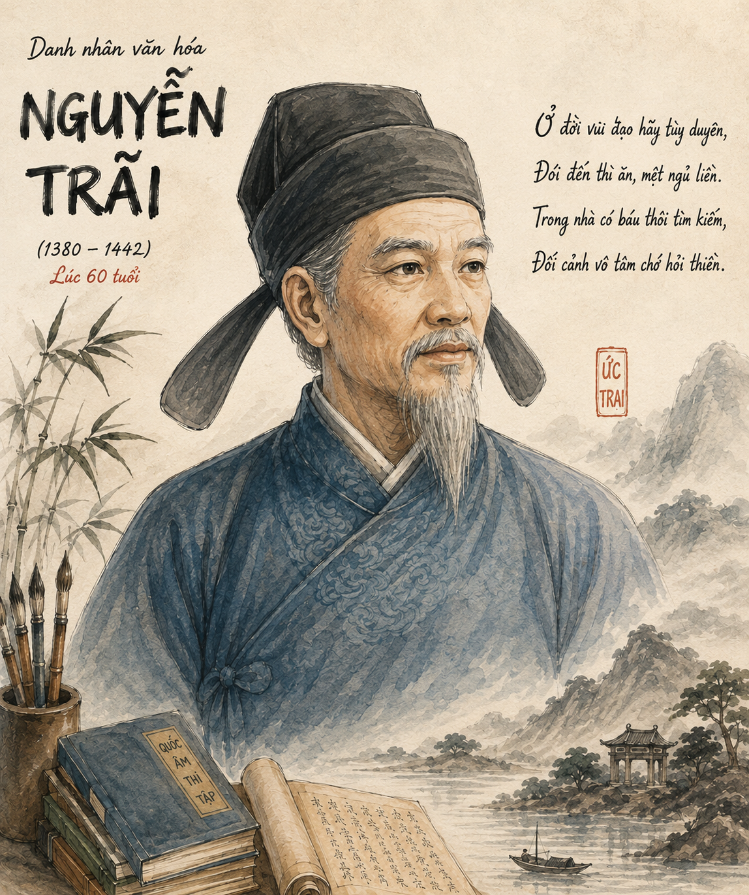

Khởi động: Bạn hãy kể tên một số tác giả văn học trung đại Việt Nam có đóng góp quan trọng trong lịch sử dựng nước và giữ nước của dân tộc. Hãy chia sẻ một vài thông tin về tác giả mà bạn ngưỡng mộ.

Hình 1: Chân dung Nguyễn TrãiNguyễn Trãi (1380 – 1442) hiệu Ức Trai, quê gốc ở làng Chi Ngại (nay thuộc huyện Chí Linh, tỉnh Hải Dương), nhưng lớn lên cùng gia đình ở làng Nhị Khê, huyện Thường Tín, tỉnh Hà Tây (nay thuộc thành phố Hà Nội). Thân phụ Nguyễn Trãi là Nguyễn Phi Khanh, đỗ Thái học sinh dưới triều Trần; thân mẫu là Trần Thị Thái - con quan Tư đồ Trần Nguyên Đán.
Năm 1400, Nguyễn Trãi thi đỗ Thái học sinh và làm quan cùng cha dưới triều Hồ. Năm 1407, triều Hồ sụp đổ, giặc Minh bắt Nguyễn Phi Khanh đưa về Trung Quốc và giam lỏng Nguyễn Trãi ở thành Đông Quan. Một thời gian sau (khoảng năm 1423), Nguyễn Trãi tìm vào Lam Sơn (Thanh Hoá) theo giúp Lê Lợi, dâng Bình Ngô sách (Sách lược đánh dẹp giặc Minh). Ông được Lê Lợi tin dùng và đã có đóng góp đặc biệt quan trọng trong cuộc kháng chiến chống quân Minh. Năm 1427, cuộc kháng chiến kết thúc thắng lợi, Lê Lợi lên ngôi Hoàng đế và giao cho Nguyễn Trãi viết Bình Ngô đại cáo.
📌 Chú ý: Vai trò của Nguyễn Trãi trong cuộc kháng chiến chống quân Minh.
Trong thời gian Lê Thái Tổ trị vì cũng như đầu triều Lê Thái Tông, nội bộ triều đình nảy sinh xung đột, nhiều bậc công thần bị sát hại, Nguyễn Trãi cũng bị nghi kị. Năm 1437, ông xin về ở ẩn tại Côn Sơn (Hải Dương). Năm 1440, vua Lê Thái Tông mời Nguyễn Trãi ra giúp nước. Ông cảm kích nhận ơn tri ngộ: “Thương thần như con ngựa già còn ham rong ruổi; xem thần như thông qua năm rét càng dạn tuyết sương” (Biểu tạ ơn).
Lưu ý: Năm 1442, Nguyễn Trãi bị bọn gian thần vu cho tội giết vua và phải chịu án "tru di tam tộc", thơ văn bị tiêu huỷ, cấm đoán. Đến tận năm 1464, vua Lê Thánh Tông mới mình oan cho Nguyễn Trãi và năm 1467 ban lệnh tìm kiếm, cho khắc in di cảo của ông. Năm 1980, Nguyễn Trãi được tổ chức UNESCO vinh danh là "Danh nhân văn hoá thế giới".
Nguyễn Trãi để lại cho hậu thế một di sản văn hoá quý giá, trong đó nổi bật là những sáng tác được viết bằng chữ Hán hoặc chữ Nôm, thuộc nhiều lĩnh vực: quân sự, chính trị, lịch sử, địa lí, văn học. Tác phẩm chữ Hán gồm: Ức Trai thi tập, Quân trung từ mệnh tập, Bình Ngô đại cáo, Lam Sơn thực lục, Dư địa chí, Chí Linh sơn phú và Băng Hồ đi sự lục; sáng tác chữ Nôm có: Quốc âm thi tập.
Thơ văn Nguyễn Trãi phong phú, đa dạng về đề tài, cảm hứng giàu giá trị tư tưởng và đậm tính trữ tình. Nổi bật trong các tác phẩm của ông là tư tưởng nhân nghĩa, tình yêu thiên nhiên và những ưu tư về thế sự.
📌 Chú ý: Nội dung cơ bản của tư tưởng nhân nghĩa trong thơ văn Nguyễn Trãi.
Định nghĩa & Giá trị cốt lõi:
Thơ văn Nguyễn Trãi kết tinh nhiều thành tựu nghệ thuật đặc sắc; góp phần quan trọng vào sự phát triển, hoàn thiện một số thể loại văn học trung đại Việt Nam: văn chính luận, thơ chữ Hán và thơ chữ Nôm.
| Thể loại | Đặc điểm nghệ thuật tiêu biểu |
|---|---|
| Văn chính luận | Mẫu mực, lập luận sắc bén, kết hợp lí lẽ và thực tiễn, mở đầu bằng triết lí nhân nghĩa hoặc quy luật tất yếu. |
| Thơ chữ Hán | Đường luật nhuần nhuyễn, điêu luyện, tả cảnh tả tình tinh tế, giàu giá trị biểu cảm và triết lí sâu sắc. |
| Thơ chữ Nôm | Đỉnh cao dòng thơ quốc âm; sáng tạo thể thơ xen lục ngôn linh hoạt; ngôn ngữ giản dị, đậm đà tính dân tộc. |
Vị trí lịch sử: Thơ văn Nguyễn Trãi xứng đáng là tập đại thành của năm thế kỉ văn học trung đại Việt Nam tính đến mốc thế kỉ XV, xây dựng vững chắc nền văn học Đại Việt.
❓ Câu hỏi 1: Dựa vào những thông tin trong văn bản, hãy nêu ấn tượng sâu sắc nhất của bạn về cuộc đời và con người Nguyễn Trãi.
✋ Hoạt động thảo luận: Nêu cảm nhận của bạn về tâm hồn Nguyễn Trãi qua những bài thơ viết về thiên nhiên.
Hãy chọn đáp án đúng nhất cho mỗi câu hỏi dưới đây nhằm củng cố kiến thức mức độ biết, hiểu.
Các bài tập tự luận củng cố chuyên sâu có kèm lời giải chi tiết.
Bài tập 1: Phân tích tư tưởng nhân nghĩa của Nguyễn Trãi qua hai câu thơ mở đầu Bình Ngô đại cáo.
Bài tập 2: Làm rõ nét đẹp tâm hồn Nguyễn Trãi qua bức tranh thiên nhiên trong thơ chữ Nôm (Quốc âm thi tập).
Bài tập 3: Trình bày những đóng góp lớn của Nguyễn Trãi đối với thể loại văn chính luận trung đại Việt Nam.